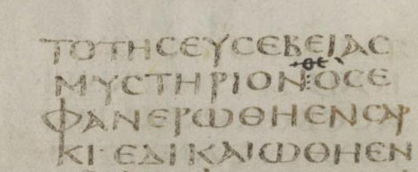

1 Timothy 3 — The Mister Translation

⚠ The line of verse 16 as Codex Sinaiticus first wrote it: ΟΣ, ‘who was made manifest in flesh.’ Above it a later corrector has added the letters for theos, ‘God,’ the reading of most later manuscripts and of the King James Version (verse 16).

Translator’s Notes
“Faithful is the saying.” This is the second of the letter’s “faithful sayings,” after 1 Timothy 1:15. The formula pistos ho logos stands in five verses: 1 Timothy 1:15, this one, 1 Timothy 4:9, 2 Timothy 2:11 and Titus 3:8 (the last yet to come in this translation). ⚠ Readers differ on which way it points: back to the saying about childbearing at 1 Timothy 2:15, or forward to the line about the overseer. A few Western witnesses, among them the Greek-Latin Codex Claromontanus as first written and some Old Latin copies, read anthrōpinos, “human”: “the saying is a common one.” The KJV reads “This is a true saying”; the NIV reads “Here is a trustworthy saying”; the NWT 1984 reads “That statement is faithful.”
“If anyone aspires to the office of overseer, he desires a good work.” “The office of overseer” is episkopē, the word of Acts 1:20, “Let another take his office of oversight”; the man who holds it is the episkopos, the “overseer,” the word later English made into “bishop” (dictionary). At Titus 1:5 and Titus 1:7 one man is called both “elder” and “overseer,” and at Acts 20:17 and Acts 20:28 the elders of Ephesus are told the Holy Spirit made them overseers. ⚠ Readers differ on whether this chapter still knows one office under two names, or shows the start of a single overseer set over the elders, the order found in the letters of Ignatius of Antioch, written about 110, where the bishop “presides in the place of God” with presbyters and deacons beneath him. This page sets out both and does not choose. The KJV reads “the office of a bishop”; the NWT 1984 reads “an office of overseer”; the TLB reads “if a man wants to be a pastor.”
“Above reproach.” Anepilēmptos, literally “not to be taken hold of,” a man who gives an accuser nothing to grab, stands in three verses, all in this letter: here, 5:7 and 6:14 (dictionary). It is a different word from the “blameless” of verse 10. The list that follows is almost all character, not skill. “Temperate” is nēphalios, from the verb “be sober” of 1 Thessalonians 5:6 (dictionary); “of sound mind” is sōphrōn, the adjective of the “soundness of mind” asked of women at 1 Timothy 2:9 (dictionary). Kosmios, “respectable,” stands in two verses, this one and the “respectable clothing” of 1 Timothy 2:9 (dictionary). “Hospitable” is philoxenos, a lover of strangers, as at Titus 1:8, with the “hospitality” of Romans 12:13 (dictionary). “Able to teach” is didaktikos, the one skill on the list (dictionary). The KJV reads “vigilant, sober, of good behaviour, given to hospitality, apt to teach”; the NWT 1984 reads “moderate in habits, sound in mind, orderly, hospitable, qualified to teach.” The Vulgate adds pudicum, and so the Douay reads “of good behaviour, chaste, given to hospitality.”
⚠ “The husband of one wife.” Mias gynaikos andra, “a man of one woman,” the phrase of Titus 1:6. Readers take it four ways: married only once, so that a widower who remarries is excluded; married to one woman at a time, against polygamy; faithful to his wife; or simply married. The first reading became church law early. The collection called the Apostolic Canons, of the fourth century, rules in its seventeenth canon: “He who has been twice married after baptism, or who has had a concubine, cannot become a bishop, presbyter, or deacon.” The NIV takes the third reading, “faithful to his wife”; the TLB the second, “He must have only one wife.” The KJV and ASV keep “the husband of one wife,” and so does this translation. This page sets out the readings and does not choose.
“Not a drunkard, not violent, but reasonable, not quarrelsome, not a lover of money.” Paroinos, “one who sits long over wine,” and plēktēs, “a striker,” are both in the overseer’s list at Titus 1:7. “Reasonable” is epieikēs, the word printed “reasonableness” at Philippians 4:5 (dictionary); amachos is “no fighter”; aphilargyros, “not money-loving.” The Byzantine text adds “not greedy for shameful gain” from verse 8, and so the KJV: “no striker, not greedy of filthy lucre; but patient, not a brawler, not covetous.” The ASV reads “no brawler, no striker; but gentle, not contentious, no lover of money”; the NWT 1984 reads “not a drunken brawler, not a smiter, but reasonable, not belligerent.”
“One who leads his own household well, keeping his children in submission with all dignity.” Proistēmi, “to stand before, to lead,” stands in eight verses: Romans 12:8, 1 Thessalonians 5:12, verses 4, 5 and 12 here, 5:17, and Titus 3:8 and 3:14 (the last three yet to come in this translation; dictionary). “Submission” is the hypotagē of 1 Timothy 2:11 (dictionary); “dignity” is the semnotēs of 1 Timothy 2:2. ⚠ Readers take “with all dignity” of the father, who keeps order without losing his own dignity, or of the children, whose conduct is to be dignified. The NIV takes the first: “he must do so in a manner worthy of full respect.” The KJV reads “having his children in subjection with all gravity”; the NWT 1984 reads “with all seriousness.”
“If anyone does not know how to lead his own household, how will he take care of God’s congregation?” The argument runs from the smaller household to the larger, and verse 15 will name the larger: “the household of God.” Epimeleomai, “to take care of,” stands in three verses: this one and the Samaritan at the inn at Luke 10:34 and Luke 10:35, “Take care of him.” The KJV reads “how shall he take care of the church of God?”; the NWT 1984 reads “how will he take care of God’s congregation?”
“Not a new convert, so that he may not be puffed up and fall into the judgment of the devil.” Neophytos, “newly planted,” stands in one verse of the New Testament (dictionary); the Douay keeps the Latin form, “Not a neophyte.” Typhoō, “to be puffed up,” from typhos, “smoke,” stands in three verses: here, 6:4 and 2 Timothy 3:4 (dictionary). ⚠ “The judgment of the devil” is read two ways: the judgment the devil himself fell under, read as a fall through pride, as the NIV has it, “fall under the same judgment as the devil”; or a judgment the devil brings, as accuser, since diabolos means “slanderer” (dictionary). The NWT 1984 reads “the judgment passed upon the Devil”; the KJV reads “the condemnation of the devil.”
“A good testimony from those outside.” “Those outside” are the people outside the congregation, as at 1 Thessalonians 4:12, Colossians 4:5 and 1 Corinthians 5:12; the seven of Acts 6:3 are chosen as men “of good testimony.” “The snare of the devil” returns at 2 Timothy 2:26; compare “do not give place to the devil” at Ephesians 4:27. The KJV reads “a good report of them which are without”; the NIV reads “a good reputation with outsiders, so that he will not fall into disgrace and into the devil’s trap.”
“Servants likewise.” Diakonoi is the word later English made into “deacons” (dictionary). This translation keeps “servants,” as at Philippians 1:1, “the overseers and servants,” and of Phoebe at Romans 16:1; it is the word of Jesus’ saying at Mark 10:43, “whoever wants to become great among you will be your servant.” Here it names a recognized office beside the overseer. Many trace the office to the seven of Acts 6:3 and Acts 6:6, appointed so that the Twelve need not “serve tables” (Acts 6:2), though Acts does not give them the title. The KJV and ASV read “deacons”; ⚠ the NWT 1984 reads “Ministerial servants,” the title of an appointed office among Jehovah’s Witnesses.
“Dignified, not double-tongued, not given to much wine, not greedy for shameful gain.” Semnos, “dignified,” the “whatever is dignified” of Philippians 4:8, stands in four verses: Philippians 4:8, verses 8 and 11 here, and Titus 2:2 (dictionary). Dilogos, “double-tongued,” saying one thing to one person and another to the next, stands in one verse of the New Testament (dictionary). “Greedy for shameful gain” is aischrokerdēs, as of the overseer at Titus 1:7 (dictionary). The KJV reads “not doubletongued, not given to much wine, not greedy of filthy lucre”; the NIV reads “sincere, not indulging in much wine.”
“Holding the mystery of the faith with a pure conscience. And let these also be tested first.” “Mystery” is mystērion, a secret once hidden and now made known, “the mystery hidden from the ages” of Colossians 1:26 (dictionary); the NWT 1984 reads “the sacred secret of the faith.” The pure conscience recalls “a pure heart and a good conscience” at 1 Timothy 1:5. “Blameless” is anegklētos, the word of Titus 1:6, not the “above reproach” of verse 2. ⚠ The verse does not say how the testing is done: readers take it as a formal trial period, or as the congregation’s knowledge of a man’s life before he serves. The TLB supplies a procedure: “they should be given other jobs in the church as a test of their character and ability.” The KJV reads “let them use the office of a deacon, being found blameless.”
⚠ “Women likewise.” Gynē means both “woman” and “wife,” and the verse has no “their.” Readers take it three ways. Some read the wives of the servants; the KJV supplies the pronoun, “Even so must their wives be grave,” and so the Geneva and TLB. Some read women who are themselves servants: “likewise” opens a new group as it did in verse 8, the list runs parallel to the men’s, and Phoebe is called a diakonos of the congregation at Romans 16:1. John Chrysostom, in his eleventh homily on this letter, says of the verse, “He is speaking of those who hold the rank of Deaconesses.” About 112, Pliny the Younger, governor of Bithynia, wrote to the emperor Trajan that he had questioned under torture two slave women “who were called ministrae,” the Latin for women servants, among the Christians there (Letters 10.96). A third reading, women in general, is the one Chrysostom names to reject: “Some have thought that this is said of women generally.” The ASV reads “Women in like manner”; the NWT 1984 reads “Women should likewise be serious.” The churches differ on women deacons today; this page sets out the readings and does not choose.
“Not slanderers.” The word is diabolous, the plural of the “devil” of verses 6 and 7: diabolos means “slanderer,” and the same word is used of people again at 2 Timothy 3:3 and Titus 2:3. “Temperate” is the nēphalios of verse 2. Then verse 12 returns to the men: “husbands of one wife,” with the readings set out at verse 2, and “leading” their households, the verb of verse 4.
“A good standing and much boldness.” Bathmos, a step or stair, stands in one verse of the New Testament (dictionary). ⚠ Readers take it three ways: a step up to a higher office, as Chrysostom reads it, “a good degree, that is, advancement”; a good standing in the congregation; or a good standing before God. The KJV, after the Vulgate’s gradum bonum, reads “purchase to themselves a good degree”; the ASV reads “gain to themselves a good standing”; the NIV reads “an excellent standing.” “Gain for themselves” is the verb of “which he acquired through the blood of his own” at Acts 20:28. “Boldness” is parrēsia, the boldness of Peter and John at Acts 4:13 (dictionary).
“Hoping to come to you soon; but if I am delayed.” Timothy has been left at Ephesus, as 1 Timothy 1:3 says. The Byzantine text reads “more quickly” for “soon.” “How one ought to conduct oneself” has no subject in Greek, and the shelf supplies three: the KJV “how thou oughtest to behave thyself,” the ASV “how men ought to behave themselves,” the NIV “how people ought to conduct themselves.” “The household of God” is oikos theou, the same word as the overseer’s own “household” in verses 4 and 5 and the servants’ in verse 12; Ephesians 2:19 uses the image, “members of the household of God.” The NWT 1984 reads “in God’s household.”
“Which is the congregation of the living God, a pillar and mainstay of the truth.” “Pillar” is stylos, the word for James, Cephas and John at Galatians 2:9, “who seemed to be pillars” (dictionary). Hedraiōma, “mainstay,” stands in one verse of the New Testament; it comes from hedraios, “firm,” the “founded and firm” of Colossians 1:23 (dictionary). The KJV reads “the pillar and ground of the truth”; the NIV reads “the pillar and foundation of the truth”; the NWT 1984 reads “a pillar and support of the truth”; the TLB reads “which contains and holds high the truth of God.”
⚠ The phrase in the churches’ debates. The Catechism of the Catholic Church, paragraph 171, cites this verse in calling the Church “the pillar and bulwark of the truth” that faithfully guards the faith handed on to the saints. John Calvin, commenting on the verse, reads it of the Church’s preaching: “the Church maintains the truth, because by preaching the Church proclaims it, because she keeps it pure and entire, because she transmits it to posterity”; and he denies that the title belongs to Rome. Some older interpreters, as Albert Barnes reports in his Notes, joined the phrase to the next verse, making the mystery itself the pillar; Barnes keeps it with the congregation. This page records the readings and does not choose.
“By common confession great is the mystery of godliness.” Homologoumenōs stands in one verse of the New Testament (dictionary); it is built on homologeō, “to confess,” the verb of Romans 10:9, “if you confess in your mouth Jesus as Lord.” The KJV reads “without controversy”; the NWT 1984 reads “admittedly”; the NIV reads “Beyond all question.” “Godliness” is eusebeia, as at 1 Timothy 2:2 (dictionary); “the mystery of godliness” answers “the mystery of the faith” in verse 9.
⚠ “He who was made manifest in flesh” — or “God was manifest”? The manuscripts read three ways. Hos, “who,” is the reading of Codex Sinaiticus, Codex Alexandrinus and Codex Ephraemi as first written, with other early witnesses, and of the critical text this translation follows. Theos, “God,” is the reading of later correctors of those same manuscripts and of most later Greek copies, and so of the Byzantine text and the Textus Receptus; the KJV reads “God was manifest in the flesh,” and the Geneva “God is manifested in the flesh.” Ho, “which,” is the reading of Codex Claromontanus as first written and of the Latin, quod, and so the Douay: “which was manifested in the flesh.” In the capital letters of the old manuscripts, ΟΣ “who” and the abbreviation ΘΣ for “God” differ by two small strokes: the bar inside the theta and the line written above an abbreviation. Isaac Newton, in a letter to John Locke dated 14 November 1690, argued that “God” was a later change; the letter was printed in 1754 as An Historical Account of Two Notable Corruptions of Scripture. Defenders of the Received Text hold that “God” is original. The readings differ, and the page sets them out. The ASV reads “He who was manifested in the flesh”; the NWT 1984 reads “He was made manifest in flesh”; the NIV reads “He appeared in the flesh.”
“Vindicated in spirit, seen by angels, proclaimed among the nations, believed on in the world, taken up in glory.” “Who” with nothing before it to refer to reads like the opening of a hymn or confession the letter is quoting, and the six lines fall into three pairs: flesh and spirit, angels and nations, world and glory. “Made manifest” is the verb of the mystery “now made plain” at Colossians 1:26. “Vindicated” is dikaioō, the verb of “justified,” in its sense of being proved right, as at Romans 3:4, “That you may be justified in your words” (dictionary). ⚠ “In spirit” is read as the Holy Spirit, as the KJV capitalizes it, “justified in the Spirit,” and the NIV reads “vindicated by the Spirit”; or as the realm of spirit set against flesh, as at Romans 1:3 and Romans 1:4, “according to the flesh” and “according to the Spirit of holiness,” and the NWT 1984 reads “declared righteous in spirit.” “Seen” is the verb of 1 Corinthians 15:5, “he was seen by Cephas”; “taken up” is the ascension verb of Acts 1:2 and Acts 1:11 (dictionary).
Patterns worth carrying forward
Where this translation keeps the exact words: “Faithful is the saying,” as at 1:15; “overseer,” not “bishop,” and “servants,” not “deacons,” as at Philippians 1:1; “above reproach” in verse 2 and “blameless” in verse 10 for two different words; “the husband of one wife,” left literal, as at Titus 1:6; “of sound mind” and “respectable,” the words of 2:9; “reasonable,” as at Philippians 4:5; “leads,” as at 1 Thessalonians 5:12; “household” for one word in verses 4, 5, 12 and 15; “dignity” and “dignified” for one root, as at 2:2 and Philippians 4:8; “women” in verse 11, with no “their”; “congregation,” never “church”; and “he who” in verse 16, with the other readings in the note.
Echoes paid. The overseer and the servants of Philippians 1:1; the elder-overseer of Titus 1:7 and his “husband of one wife” at Titus 1:6; the faithful saying of 1 Timothy 1:15; dignity and soundness of mind from 1 Timothy 2:2 and 1 Timothy 2:9; the leaders of 1 Thessalonians 5:12; Phoebe, a servant of the congregation, at Romans 16:1; the pillars of Galatians 2:9; and the one taken up at Acts 1:2.
Echoes planted. The elders who lead well at 5:17 and the widow who was the wife of one husband at 5:9; “puffed up” again at 6:4; “able to teach” and “the snare of the devil” at 2 Timothy 2:24 and 2:26; and the next “faithful saying” at 4:9.
Next in this book: 1 Timothy 4, already on these pages. “In later times some will fall away from the faith,” teachers who forbid marriage, bodily training and godliness, and Timothy’s youth, not to be looked down on.